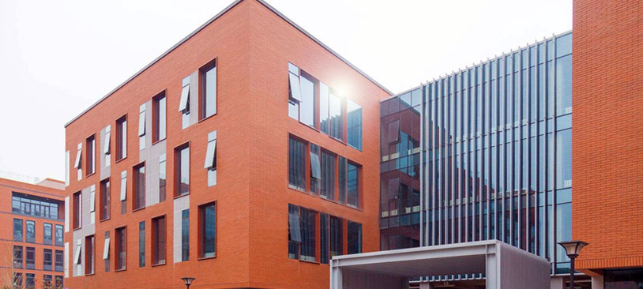

COMPANY PROFILE
创立于2000年的我爱我家，是伟业我爱我家集团旗下专门从事二手房经纪和房屋租赁业务的专业业务品牌，从2000年5月份，我爱我家全国第一家店面“北京甜水园店”开业，到2002年5月份，我爱我家业务在上海落地，短短两年时间，我爱我家迅速完成了包括北京、天津、太原、南京、苏州、上海、杭州7个城市在内的第一轮全国布局，成为国内知名的大型品牌连锁经纪品牌。
2013年，我爱我家在全国范围内开启第二轮强势扩张，直营业务覆盖城市由原来的7个，扩展到包括四川成都和广西南宁在内的9个城市。与此同时，时隔十二年后，我爱我家重启加盟业务，通过加盟模式，将业务迅速扩展至江西南昌、湖南长沙、湖北武汉3大城市，2016年又将直营业务拓展至河南郑州、山东青岛和江苏无锡。
凭借优质的房地产经纪服务，2012~2014年，“我爱我家”品牌连续三届被工信部下属的中国企业品牌研究中心评为中国房产中介服务行业C-BPI品牌力第一名。

我爱我家门店——线下业务总入口
伟业我爱我家集团在全国的15个大中型城市，拥有深入社区的连锁门店2215余家，专业的房产置业顾问服务团队4.5万余人，面向广大以年轻白领为主的个人消费者，提供包括新房交易、二手房经纪、房屋租赁、住宅资产管理、海外房产交易等在内的房地产全产业链的综合性一站式服务。
2013年，我爱我家门店导入全新的“3.0版店面SI体系”，使我爱我家新店面成为集互联网、移动互联网等各类高科技元素于一身的，兼附强大的社区社交服务功能的，房地产O2O体系中的重要一环。
2016年四季度，集团启动“我爱我家门店4.0版SI体系”的研发设计，更前沿的互联网、移动互联网等各类高科技集成，使“我爱我家店面”在给广大经纪人带来更舒适高效的办公环境的同时，也将给广大客户带来更优质的、全流程的消费服务体验。
我爱我家门店——线下业务总入口
依托扎实的线下业务基础，伟业我爱我家集团大胆变革，乐于创新，紧跟时代步伐，紧随客户需求变化，积极采用互联网、移动互联网等新技术、新工具和新手段，用心服务，创新价值。
1998年，伴随第一波互联网高潮，集团创立“我爱我家网5i5j.com”；
2003年率先在业内建立“网站、门店、呼叫中心三网合一式的企业发展模式”；
伴随移动互联网的发展，伟业我爱我家集团基于我爱我家官网“5i5j.com ”开发并陆续上线了集WAP手机版网站、APP、微信公众服务平台等多渠道的移动房产综合服务平台体系，可以为广大客户提供新房交易、二手房买卖、房屋租赁、住宅资产管理、海外房产交易等房地产全产业链线上综合服务。
凭借优质的客户服务体验，截止目前，我爱我家官网5i5j.com 累计总访客数突破 1 亿，“ 我爱我家”APP的总下载量逾300万人次，我要屋热线4008-515-515年呼入量逾200万人次。